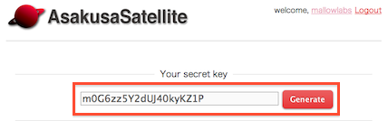

本章では、AsakusaSatellite が提供している API について説明します。 外部のアプリケーションから、AsakusaSatellite に 発言を投稿したり、発言を取得したりすることができます。
API キーは、API を利用するために使用する認証用のキーです。 キーを利用することで、AsakusaSatellite は ユーザを認証することができます。 そのため、API キーは他人に渡してはいけません。
API キーを取得するには、 画面右上のログインユーザ名のリンクをクリックし、 個人情報画面を開きます。
画面に表示されているランダムな文字列が、 ログインユーザを認証するための API キーです。
Generate ボタンをクリックすると再生成します。
以下は、部屋番号と発言をコマンドラインオプションで指定して 発言を行うプログラムの例です。
#! /user/bin/env ruby
# -*- mode:ruby; coding:utf-8 -*-
# ------------------------------
# example for bot
# ------------------------------
# Get from http://$AS_ROOT/account/index
ApiKey = "YOUR_API_KEY"
# EntryPoint
EntryPoint = "http://localhost:3000/api/v1"
# ------------------------------
require 'net/http'
if ARGV.size != 2 then
puts "#{$0} <room_id> <message>"
exit 0
end
room_id, message = *ARGV
uri = URI(EntryPoint)
Net::HTTP.start(uri.host, uri.port) do| http |
# post message
p http.post(uri.path + "/message",
"room_id=#{room_id}&message=#{message}&api_key=#{ApyKey}")
end